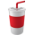
Ncup
Is it really for the environment?
School Assignment
Role
User Research
UI Design
Prototyping for usability test
Usability Testing
UI Design
Prototyping for usability test
Usability Testing
Overview
In these days, many coffee lovers and companies are interested in protecting environment and making an effort in their own way. Representative one is to use reusable cup. Collecting tumblers of large companies has become the latest trend in Korea. However, other environmental problems such as greenhouse gas emissions occurs as the production of reusable cup is growing. This project is to empower consumers helping them understand how their actions impact the envrionment by monitoring of their frootprint.
Define
Brief
Today, the ideology of consumerism seems utterly dominant in developed socities. People keep consuming products and services even though they do not need it. It has become easier to consume almost everything with just clicking the button online. This project was the UX of convenience. I was allowed to design a way to address the negative impacts of convenience consumerism.
Approach
I approached this project from doing diary studies and exploring my consumerism. I found that I consume coffee a lot and narrowed down my resarch to consumering coffee. While research about coffee, I observed Korean people were participating the environmental campaign and were crazy at receiving the reward which was plastic reusable cup. It inspried me to do further research.
User Research
“I have each plastic, stainless steel and glass cup with different uses.”
“I love to collect tumblers so I dispose of others anually because
I have too many tumblers.”
“I usually forget to bring
my reusable cup when I go out.”
“I firstly bought tumblers in franchise cafe. I and my friend have waited in front of the store since 4 a.m. to buy the limited cup when cafe release seasons collections of tumblers.”
“I use tumblers to get rewards
in cafe.”
*Answers are based on survey and questionnaires
Target Research
Most Korean people have portable reusable cups and they have dirverse products with different uses such as hot/cold drink. They try to bring their own cups when they go out in order to protect environment and to get incentives, but it is hard and tiresome for them to take them in busy morning. Collecting famous franchise cafes’ tumblers became a trend for yourger people. Most of them first experienced using tumbler through buying for following trend or present. Brand image is important and people want some unique, special and limited items, and accrordignly cups are re-sold with higher price.
Market Research & Making a Report
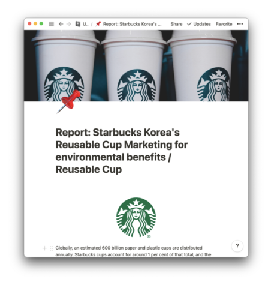
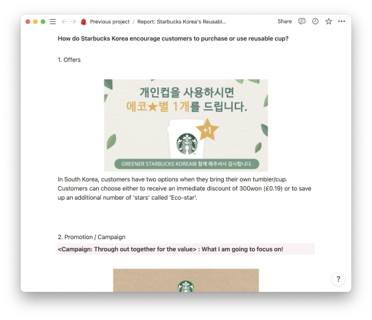

‘Is consuming reusable cup really for the environment?’
‘What should we do to not forget good purpose of using it?’
‘How can we do not blame or shame individuals but empower them to help positively support changes of consumerism?’
Insight
Starbucks Korea, which has the largest number of stores in the world, has a very high participation rate of Koreans in its annual environmental campaign. They often give a reusable cup if they participate within a certain period of time. However, young Koreans are sensitive to trends and limited sales, so they focus on receiving cups rather than environmental protection. I think good changes will be possible if good intentions are informed to people on a regular basis, not on a temporary basis.
UX Challenge
I proposed an app for those who purchase and use the reusable cup. The app introduces why users should reduce their purchases of reusable cups, and encourages to use the cups they already have. It allows them to change gradually without blaming their purchasing behavior, and give incentives to the trend so that their morale does not decrease.
Research Methods : 1:1 Interviews, Questionnaire, Diary Studies
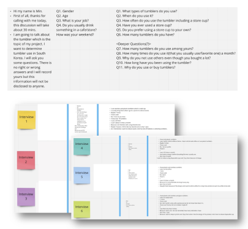
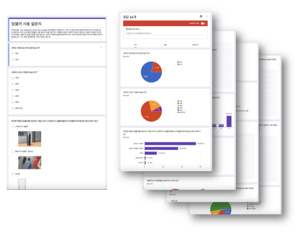
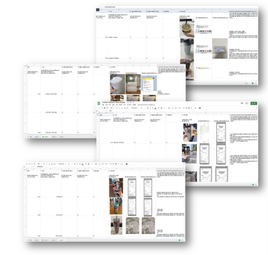
Analysis
Persona
BIO
Jisu is interested in environment so she use eco-friendly items like bamboo toothbrush and paper straw. Her paerents do not want her to drink coffee so she love to drinkhot chocolate in Starbucks or bubble tea in Gong-Cha.

BIO
Yuna is really busy because of her work. She rotates night shift with her colleague. She drink coffee 4 times everyday and always buy coffee in the morning. She has mysophobia, so she always do clean everything.
Name
Jisu Jang
Name
Yuna Lee
Age
17
Age
26
Occupation
Student
Occupation
Nurse
Brands
Starbucks, Gong-Cha
Brands
Starbucks, Tom N Toms, Ediya
Goal
She hopes her school friends to use reusable cup like her in school. And she will use tumbler everyday.
Goal
She does not want to use hospital’s cup because they all look same and sometimes forget which cup is hers.
Frustration
It is hard for her to explain why her friends need to use reusable cup.
Frustration
Due to busy life, she usually forget to bring her own cup.
Journey Map
“Yuna wants to not forget to bring her own cup when she goes work and buy coffee. She has 3 materials of cups, plastic, stainless steel, and glass. She use plastic cup when she want to drink cold, use stainless steel for hot drink. She does not bring her glass cup because it is fragile.”
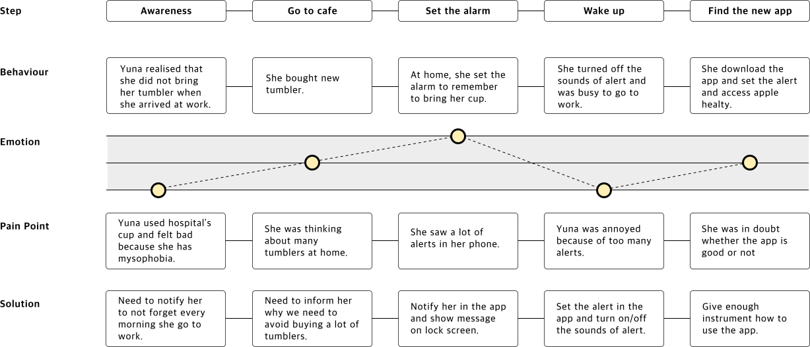
Core Needs & Function
01
Want to stop buying
a lot of cups and realise ownself
Register up to 3 cups in case of different uses
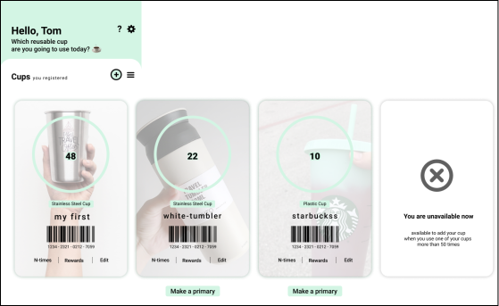
02
WWant to know
exact reason
to use reusable cup
Explain why users need to use reusable cup
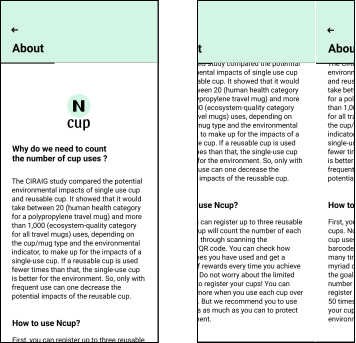
03
Want to know
how many times
left for rewards
Check
status for
goals&rewards
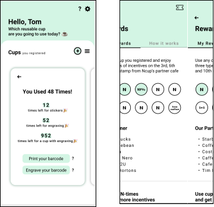
04
Want to get
limited edition like Starbucks items
Give rewards
that are very
unique and special
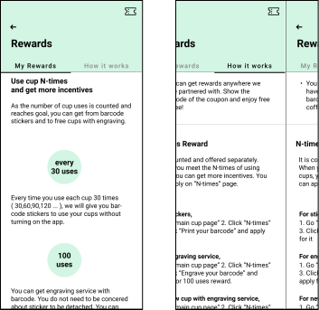
05
Do not want to
forget to bring
own cup
Notify users when users turn on notificaiton
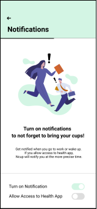
Design
Workflow
Wireframe
Stakeholder map of Ncup project


You can see the video of Ncup
Click the image and enjoy!
Click the image and enjoy!